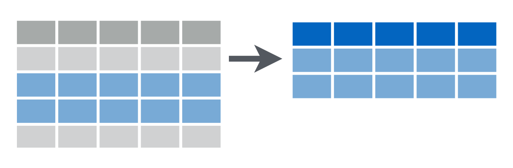
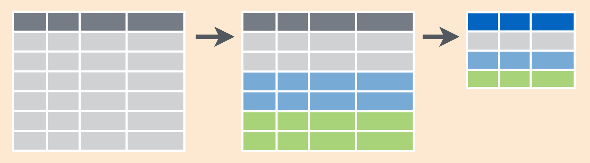

Session 3
August 1, 2018
Review
Packages
How do you install a package from the R prompt, like readxl?
Answer
How do load a package from the R prompt, like dplyr
Answer
How can you use RStudio to load a package?
Answer

RStudio Packages Pane
Okay, but what is a package?
Answer
A package contains:
- Functions
- Documentation
- Vignettes
- Data
Collections
What data type are each of the following?
| Type | Example |
|---|---|
1L |
|
3.14, 1.23e-4 |
|
"apple" |
|
TRUE, FALSE |
|
c(...) |
|
list(...) |
|
data.frame(...) |
|
data_frame(...) |
|
NA |
|
NULL |
|
factor(letters) |
Answer
integer, double, character, logical, vector, list, data.frame, tibble, N/A (missing), Null and factorVectors
Create the following vector and add additional names to it:
[1] 1 2 3[1] 1 2 3[1] FALSE[1] TRUE[1] 1.000000 2.000000 3.000000 3.141593[1] "apple" "banana"[1] "apple" "banana" "cherimoya"March April May
31 30 31 August September October
31 30 31 October
31 Lists
$fruits
[1] "apple" "banana" "cherimoya"
$months
[1] "August" "September" "October"
$month_days
August September October
31 30 31 Data Frames and Tibbles
fruits months month_days
August apple August 31
September banana September 30
October cherimoya October 31y2 <- data.frame(
fruits = fruits,
months = names(month_days),
month_days = month_days,
stringsAsFactors = FALSE,
row.names = NULL
)
y2 fruits months month_days
1 apple August 31
2 banana September 30
3 cherimoya October 31z <- data_frame( #<< tibble()
fruits = fruits,
months = names(month_days),
mont_days = month_days
)
z# A tibble: 3 x 3
fruits months mont_days
<chr> <chr> <dbl>
1 apple August 31
2 banana September 30
3 cherimoya October 31Data Types Continued
Review
| Type | Example |
|---|---|
| integer | 1L |
| double | 3.14, 1.23e-4 |
| character | "apple" |
| logical | TRUE, FALSE |
| vector | c(...) |
| list | list(...) |
| data.frame | data.frame(...) |
| tibble | data_frame(...) |
| N/A | NA |
| null | NULL |
| factor | factor(letters) |
Factors
We’ll talk about this later, but it’s basically a vector with an additional label and sometimes an order.
Sneak Peek
[1] 1 2 3
Levels: 1 2 3[1] 1 2 3
Levels: 1 2 3[1] a b c
Levels: a b c[1] a b c
Levels: a < b < c[1] c b a
Levels: a < b < cWorking with Data Types
What is this thing?
[1] "integer"[1] "numeric"[1] "character"[1] "character"[1] "data.frame"Are you this thing?
[1] TRUE[1] TRUE[1] TRUE[1] FALSE[1] TRUE[1] FALSEAre you even there?
[1] FALSE FALSE TRUE FALSE[1] FALSE[1] TRUETurn you into this thing.
[1] "1"[1] 3[1] 10[1] TRUEWorkspaces & RStudio Projects
Working Directory
The working directory is where R looks when it tries to find a file or where it writes a file.
You can check where your R process is “living” – i.e. your working directory – with
and you can set it with
But this is not recommended!
You can also use ▸ or in the Files pane to set the working directory, but this is also not recommended.
When should you? When you get lost.
Using RStudio Projects
Without some kind of organization scheme, you’ll very quickly end up writing all of your R scripts in a single folder. Multiple analysis will write out files, exporting data and creating plots, each of these writing into the same folder.

Life without RStudio Projects
Instead, RStudio offers an excellent method of organization called Projects. Using RStudio projects, each analysis is self-contained and organized, each in its own way, and it’s easy to switch from one project to another and know that your files will be organized, your environment will be clean, and you can pick everything back up from where you started.

Life with RStudio Projects, credit
Create an RStudio Project
Select ▸ or choose from the drop-down menu in the upper right corner of the RStudio window.

Select New Directory to create your project in a new directory. If you already have files in a directory that you want to use, choose Existing Directory.

Select the type of project you want to start – this will generally be New Project.

Choose the name for the folder that will be created to house your project and pick the folder where the project folder will be created.
Here we give the new project folder the name cds-r-course. This will also be the name of the project itself.

Your project will be created and you’ll be dropped into a new R/RStudio session.

Work with your project
Use the Files to create a folder called data in your project folder.
Run the following command to download the gapminder.csv file into your data folder.
Create a new R script. Add the following code to it.
library(tidyverse)
patient_id <- 5554321
age_at_diagnosis <- 54
age_at_visit <- 54:58
tumor_size <- c(9.5, 9.5, 9.7, 9.9, 10.1)
site_code <- c("C220", "C400", "C412", "C220", "C400")Save the file as example_single_patient.R in your project directory.
Source the file.
Close the project. Take a deep breath. Re-open the project.
Functions
Functions that work with vectors
So far we’ve primarily seen vectors that operate on single values or that take single-valued arguments.
But as we’ve seen, R is a vectorized language.
Try using the following functions on the variables we created in example_single_patient.R.
[1] 9.5[1] 10.1[1] 9.74[1] 9.7[1] 0.068[1] 0.2607681[1] 0.4Those functions all come from base R (standard R library).
The following functions are given to us from dplyr. We have dplyr loaded if we’ve run library(tidyverse), but I’ll include the dplyr:: first as a reminder that that’s where these functions come from.
[1] "C220"[1] 58[1] "C400"[1] 3All of these functions return a single value. Try the following. What happens and why?
[1] 95 95 97 99 101[1] 0 1 2 3 4[1] "Site Code: C220" "Site Code: C400" "Site Code: C412" "Site Code: C220"
[5] "Site Code: C400"Because R is vectorized, operations are applied to the whole vector.
Dot, dot, dot
R has a somewhat unique addition for writing and using functions: the dot-dot-dot (...).
The ... is used in two ways:
To allow you to include an unknown number of values.
paste <- function (..., sep = " ", collapse = NULL)[1] "a b c"[1] "a b c d"To allow you to pass arguments to an underlying function.
rep <- function (x, ...) .Primitive("rep")[1] 1 1 1 1[1] 1 1 1 1[1] 1 1 1 1
Data Processing
Open the file example_single_patient.R and add the following lines.
example <- data_frame(
patient_id = patient_id,
age_dx = age_at_diagnosis,
age_visit = age_at_visit,
tumor_size = tumor_size,
site_code = site_code
)Clear your workspace (quick refresher here) and then source the script.
View the tibble that is stored in example.
# A tibble: 5 x 5
patient_id age_dx age_visit tumor_size site_code
<dbl> <dbl> <int> <dbl> <chr>
1 5554321 54 54 9.5 C220
2 5554321 54 55 9.5 C400
3 5554321 54 56 9.7 C412
4 5554321 54 57 9.9 C220
5 5554321 54 58 10.1 C400 The “pipe” operator %>%
It looks like this:
%>%
You can type it with
Ctrl + Shift + M (Windows)
Cmd + Shift + M (Mac)
You say it like
[1] 1.5[1] 1.5[1] 1.5Requires tidyverse or dplyr!
dplyr verbs
filter()

# A tibble: 2 x 5
patient_id age_dx age_visit tumor_size site_code
<dbl> <dbl> <int> <dbl> <chr>
1 5554321 54 55 9.5 C400
2 5554321 54 58 10.1 C400 # A tibble: 3 x 5
patient_id age_dx age_visit tumor_size site_code
<dbl> <dbl> <int> <dbl> <chr>
1 5554321 54 56 9.7 C412
2 5554321 54 57 9.9 C220
3 5554321 54 58 10.1 C400 # A tibble: 4 x 5
patient_id age_dx age_visit tumor_size site_code
<dbl> <dbl> <int> <dbl> <chr>
1 5554321 54 55 9.5 C400
2 5554321 54 56 9.7 C412
3 5554321 54 57 9.9 C220
4 5554321 54 58 10.1 C400 [1] 54arrange()
# A tibble: 5 x 5
patient_id age_dx age_visit tumor_size site_code
<dbl> <dbl> <int> <dbl> <chr>
1 5554321 54 54 9.5 C220
2 5554321 54 57 9.9 C220
3 5554321 54 55 9.5 C400
4 5554321 54 58 10.1 C400
5 5554321 54 56 9.7 C412 # A tibble: 5 x 5
patient_id age_dx age_visit tumor_size site_code
<dbl> <dbl> <int> <dbl> <chr>
1 5554321 54 56 9.7 C412
2 5554321 54 55 9.5 C400
3 5554321 54 58 10.1 C400
4 5554321 54 54 9.5 C220
5 5554321 54 57 9.9 C220 # A tibble: 5 x 5
patient_id age_dx age_visit tumor_size site_code
<dbl> <dbl> <int> <dbl> <chr>
1 5554321 54 54 9.5 C220
2 5554321 54 57 9.9 C220
3 5554321 54 55 9.5 C400
4 5554321 54 58 10.1 C400
5 5554321 54 56 9.7 C412 # A tibble: 5 x 5
patient_id age_dx age_visit tumor_size site_code
<dbl> <dbl> <int> <dbl> <chr>
1 5554321 54 58 10.1 C400
2 5554321 54 57 9.9 C220
3 5554321 54 56 9.7 C412
4 5554321 54 54 9.5 C220
5 5554321 54 55 9.5 C400 group_by() + count()
# A tibble: 5 x 5
# Groups: patient_id [1]
patient_id age_dx age_visit tumor_size site_code
<dbl> <dbl> <int> <dbl> <chr>
1 5554321 54 54 9.5 C220
2 5554321 54 55 9.5 C400
3 5554321 54 56 9.7 C412
4 5554321 54 57 9.9 C220
5 5554321 54 58 10.1 C400 # A tibble: 5 x 5
# Groups: patient_id, site_code [3]
patient_id age_dx age_visit tumor_size site_code
<dbl> <dbl> <int> <dbl> <chr>
1 5554321 54 54 9.5 C220
2 5554321 54 55 9.5 C400
3 5554321 54 56 9.7 C412
4 5554321 54 57 9.9 C220
5 5554321 54 58 10.1 C400 # A tibble: 1 x 2
# Groups: patient_id [1]
patient_id n
<dbl> <int>
1 5554321 5# A tibble: 3 x 3
# Groups: patient_id, site_code [3]
patient_id site_code n
<dbl> <chr> <int>
1 5554321 C220 2
2 5554321 C400 2
3 5554321 C412 1summarize()


# A tibble: 1 x 1
`min(age_dx)`
<dbl>
1 54# A tibble: 1 x 1
max_tumor_size
<dbl>
1 10.1example %>%
summarize(
tumor_size_median = median(tumor_size),
tumor_size_mean = mean(tumor_size),
age_visit = max(age_visit)
)# A tibble: 1 x 3
tumor_size_median tumor_size_mean age_visit
<dbl> <dbl> <dbl>
1 9.7 9.74 58mutate()


# A tibble: 5 x 6
patient_id age_dx age_visit tumor_size site_code follow_up
<dbl> <dbl> <int> <dbl> <chr> <dbl>
1 5554321 54 54 9.5 C220 0
2 5554321 54 55 9.5 C400 1
3 5554321 54 56 9.7 C412 2
4 5554321 54 57 9.9 C220 3
5 5554321 54 58 10.1 C400 4# A tibble: 5 x 5
patient_id age_dx age_visit tumor_size site_code
<dbl> <dbl> <int> <dbl> <chr>
1 5554321 54 54 950 C220
2 5554321 54 55 950 C400
3 5554321 54 56 970. C412
4 5554321 54 57 990 C220
5 5554321 54 58 1010 C400 # A tibble: 5 x 6
patient_id age_dx age_visit tumor_size site_code tumor_size_mm
<dbl> <dbl> <int> <dbl> <chr> <dbl>
1 5554321 54 54 95 C220 9500
2 5554321 54 55 95 C400 9500
3 5554321 54 56 97 C412 9700
4 5554321 54 57 99 C220 9900
5 5554321 54 58 101 C400 10100group_by() + summarize()

example %>%
group_by(site_code) %>%
summarize(
tumor_size_mean = mean(tumor_size),
age_mean = mean(age)
)Error in summarise_impl(.data, dots): Evaluation error: object 'age' not found.example %>%
group_by(site_code, patient_id) %>%
summarize(
tumor_size_mean = mean(tumor_size),
age_mean = mean(age)
)Error in summarise_impl(.data, dots): Evaluation error: object 'age' not found.example %>%
group_by(site_code) %>%
summarize(
#patient_id = patient_id,
patient_id = first(patient_id),
tumor_size_mean = mean(tumor_size),
age_mean = mean(age)
)Error in summarise_impl(.data, dots): Evaluation error: object 'age' not found.